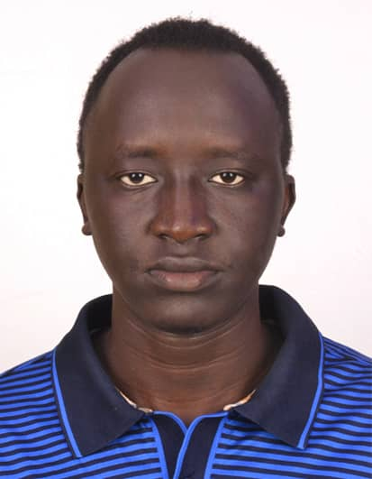

PERSONAL DETAILS
- Name: DENG ELIJAH
- location: kampala-uganda
- Phone: 0776921283
- Email: deng.elijah@stud.umu.ac.ug
INTERESTS
- coding
- swimming
WORK EXPERIENCE
- 20223-present: Junior software enngineer
- 2020-2017: Website Analyst
Social Media platforms:
DENG ELIJAH
due to graduate in 2024,i have acquired Technical knowledge and skills from my course as well as practical and business skills from my individual year in a software company in sout sudan. i have used a range of languages, operating systems and development tools as well as experiencing the system development lifecycle specializing in mobie technology
EDUCATION AND QUALIFICATIONS
- Diploma of software engineering at IUEA
- Bachelors of science in Information Technology at Uganda Martyrs University
SOFT SKILLS
- Microsoft office
- Google Analytics
REFERENCES
- Mr. Toko Robert
- Software engineer
- MTN-Uganda.